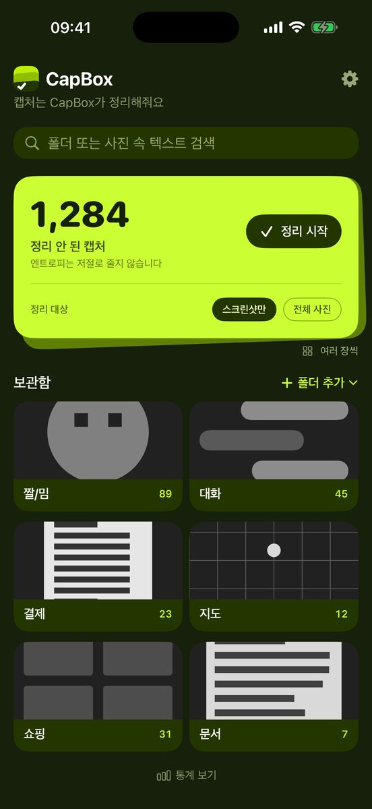
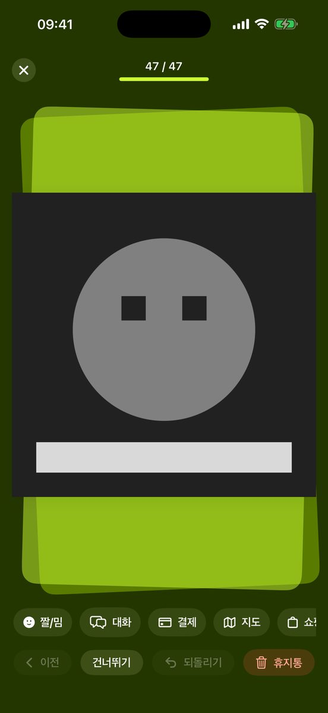
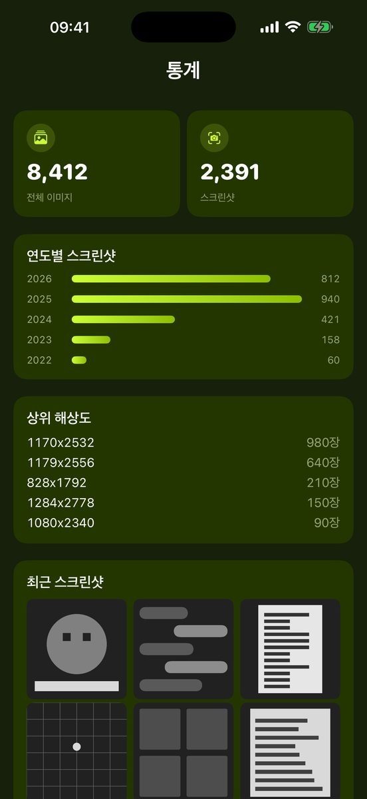

단톡방에서 저장한 짤, 배달 주문 내역, 맛집 찾다 캡처한 네이버 지도까지 — 사진첩에 뒤섞인 스크린샷을 한 장씩 넘기며 폴더로 보내세요. 필요 없는 건 휴지통에 모았다가 한 번에 비우고, 나중엔 사진 속 글자로 찾으면 됩니다.

카메라 롤을 훑어서 아직 정리 안 된 캡처가 몇 장인지 보여줍니다. 스크린샷만, 또는 전체 사진을 대상으로 고를 수 있어요.
한 장씩 좌우로 넘기며 아래 폴더 칩을 탭하면 끝. 여러 장을 골라 한 번에 보낼 수도 있어요. 필요 없는 건 휴지통으로.
폴더는 사진 앱 ‘CapBox’ 폴더 안의 진짜 앨범이라, CapBox를 지워도 정리한 결과는 그대로 남습니다.
사진 속 글자 인식도, 검색도 전부 iPhone 안에서 처리합니다. 서버가 없으니 보낼 곳도 없어요. 가입도, 인앱 결제도 없습니다.
짤/밈·대화·결제·지도·쇼핑·문서 기본 폴더 세트로 시작하거나, 이미 만들어 둔 앨범을 가져오세요. 이름·색·아이콘은 언제든 바꿀 수 있어요.


정리하다 필요 없는 캡처는 휴지통으로. 모아서 확인하고 한 번에 비워요. 잘못 넣은 건 복원할 수 있어요.
캡처 안의 글자를 기기에서 인식해 둡니다. 폴더 안 사진은 물론 아직 정리 안 한 스크린샷도 글자로 찾아요. 한국어·영어·일본어·중국어(번체).
사진 앱에 이미 만들어 둔 앨범을 CapBox 폴더로 가져와 이어서 정리할 수 있어요.
카드를 한 장씩 넘기며 정리할 수도, 여러 장을 골라 한 번에 폴더로 보낼 수도 있습니다.
스크린샷이 해마다 몇 장씩 쌓였는지, 어떤 해상도가 많은지 한눈에 봅니다.
한국어·English·日本語·繁體中文. 앱 화면도, 글자 검색도.
CapBox — 스크린샷을 한 장씩 넘기며 폴더로 정리하고, 필요 없는 건 휴지통으로 지우며, 사진 속 글자로 검색하는 iPhone 앱입니다. 모든 처리는 기기 안에서 이루어지며 무료이고 인앱결제가 없습니다.